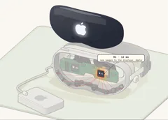
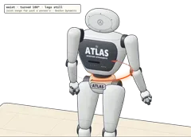
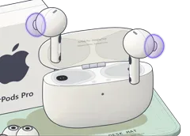

← 可视化学习
28
Vision Pro
· 全部 40 个
▼
图 29
大疆无人机
图 36
大疆 Neo

图 28
Vision Pro
图 38
劳力士潜航者
图 37
Meta Ray-Ban 显示眼镜
图 41
iPad Pro
图 25
NVIDIA DGX Spark
图 30
Spot 机器狗
图 40
带机械臂的扫地机器人

图 35
Atlas 机器人
图 39
密码锁
图 33
星链天线
图 32
任天堂 Switch 2
图 34
F1 方向盘
图 24
PlayStation 手柄
图 20
iPhone
图 21
MacBook
图 27
RTX 5090
图 26
Mac mini
图 23
Apple Watch

图 22
AirPods Pro
图 18
机械表
图 15
魔方
图 16
拍立得
图 19
原子
图 17
熔岩灯
图 02
抓娃娃机
图 07
微波炉
图 01
意式咖啡机
图 03
汽车发动机
图 04
自动售货机
图 05
洗衣机
图 06
烤面包机
图 08
卷笔刀
图 09
烟雾报警器
图 10
冰箱
图 11
扭蛋机
图 12
大头贴机
图 13
过山车
图 14
电梯
←
→
完整指南 ↗
作者
@elvar_official
Vision Pro 的视野范围有多大，它的屏幕有多小？按下步骤，或者等待头戴式设备自行运行这些步骤。
×3
摄像头 · Apple
12
个传感器 · Apple
5
麦克风内将新图像流式传输到显示屏· Apple
6
R1 · Apple
12 毫秒
像素 · Apple
2300 万
零件
1 个头戴式耳机
按空格或回车执行下一步 · ← → 切换机器
作者
@elvar_official